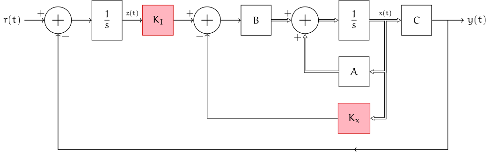

SignalPlot = function(points, xdomain, ydomain) {
return Plot.plot({
grid: true,
x: { domain: xdomain},
y: { domain: ydomain},
marks: [
// Axes
Plot.ruleX([0]),
Plot.ruleY([0]),
// Data
Plot.line(points, {x: "x", y: "y"}),
]
})
}
parabola_points = {
var points = new Array()
var idx = 0;
points[idx++] = { x: -1, y: 0}
var Δ = 0.1;
for(var n=0; n <= 40; n++) {
points[idx++] = { x: n*Δ, y : 0.5*(n*Δ)**3 }
}
return points
}10 Steady-state errors
So far, we have investigated system stability and transient response. We now look at steady-state error.
Steady-state error is the difference between the input (or reference) and the output for a prescribed test input as \(t \to ∞\). We are typically interested in the following test signals shown below:
| Input | Interpretation | \(r(t)\) | \(R(s)\) |
|---|---|---|---|
| Step input | Constant position | \(\IND(t)\) | \(\dfrac 1{s}\) |
| Ramp input | Constant velocity | \(t\IND(t)\) | \(\dfrac 1{s^2}\) |
| Parabola input | Constant acceleration | \(\frac 12 t^2 \IND(t)\) | \(\dfrac 1{s^3}\) |
Since we are interested in steady state errors, we restrict attention to stable systems. The formulas that we derive will not be applicable to unstable systems.
10.1 Steady-state errors for general systems
Consider a system with input \(r(t)\), TF \(T(s)\) and output \(y(t)\). The steady state error is defined as the difference between the reference and the ouput, i.e., \[ e(t) = r(t) - y(t). \] We assume that \(T(s)\) is stable. Therefore, from the final value theorem (see below), we have \[ e(∞) = \lim_{t \to ∞} e(t) = \lim_{s \to 0} s E(s) \] Now observe that \[ E(s) = R(s) - Y(s) = R(s) - R(s)T(s) = R(s)\bigl[ 1 - T(s) \bigr]. \] Hence, \[ \bbox[5pt,border: 1px solid] {e(∞) = \lim_{s \to 0} s R(s) (1 - T(s))} \]
ImportantThe Final Value Theorem
Consider a signal \(x(t)\) with Laplace transform \(X(s)\). Suppose every pole of \(F(s)\) is either in the open left hand plane or at origin, then \[ \lim_{t \to ∞} x(t) = \lim_{s \to 0} s X(s). \]
- If \(X(s)\) has more than one pole at origin, then the above formula is still correct but \(x(∞)\) will converge to \(\pm \infty\). See Chen et al (2007) for details.
- If \(X(s)\) has poles in the ORHP, then \(x(∞)\) does not exist.
Thus, for our purposes, in order to apply the final value theorem, we need to make sure that \(1 - T(s)\) has no poles in the ORHP. Typically, \(1 - T(s)\) will have the same denominator as \(T(s)\), so we simply check if the system \(T(s)\) has no poles in the ORHP.
Example 10.1 Find the steady-state error of the open loop system with TF \[ T(s) = \frac{2s + 10}{s^2 + 3s + 15}. \] to a step input.
NoteSolution
We first check if the system has no poles in the ORHP. From Routh Hurwitz criteria we have
| $s^{2}$ | $1$ | $15$ |
| $s^{1}$ | $3$ | |
| $s^{0}$ | $\displaystyle -\frac{\DET{ 1 & 15 \\ 3 & 0}}{3} = 15$ |
Since all entries in the first column are positive, the system is stable. Therefore, we have \[ e(∞) = \lim_{s \to 0} s R(s) (1 - T(s)) = 1 - T(0) = \frac{5}{15} = 0.333 \]
To confirm, we plot the step response of the above system below. From the step response, we see that the system settles around \(0.67\). Thus, the steady-state error is indeed \(0.33\) as computed.
using ControlSystems, Plots
G = tf([2,10],[1,3,15])
plt = plot(size=(600,300), gridalpha=0.75, minorgridalpha=0.25)
plot!(plt, step(G))![]()
10.2 System Type
Before looking at more general systems, we discuss the notion of a system type. A general TF can be written as \[ \def\1#1{\Bigl(1 + \dfrac{s}{#1}\Bigr)} G(s) = K \frac{\1{z_1}\1{z_2}\cdots\1{z_m}} {\textcolor{red}{s^k}\1{p_1}\1{p_2}\cdots\1{p_{n-k}}} \] Here \(k\) denotes the number of poles at origin and is called the type of the system. Thus, we have
Type 0: \(\def\1#1{\Bigl(1 + \dfrac{s}{#1}\Bigr)} \quad G(s) = K_p \frac{\1{z_1}\1{z_2}\cdots\1{z_m}} {\1{p_1}\1{p_2}\cdots\1{p_n}}\)
Type 1: \(\def\1#1{\Bigl(1 + \dfrac{s}{#1}\Bigr)} \quad G(s) = \dfrac{K_v}{s} \frac{\1{z_1}\1{z_2}\cdots\1{z_m}} {\1{p_1}\1{p_2}\cdots\1{p_{n-1}}}\)
Type 2: \(\def\1#1{\Bigl(1 + \dfrac{s}{#1}\Bigr)} \quad G(s) = \dfrac{K_a}{s^2} \frac{\1{z_1}\1{z_2}\cdots\1{z_m}} {\1{p_1}\1{p_2}\cdots\1{p_{n-2}}}\)
For historical reasons, the gain corresponding to the different system types are called:
- position constant \(K_p = \lim_{s \to 0} G(s)\)
- velocity constant \(K_v = \lim_{s \to 0} s G(s)\)
- acceleration constant \(K_a = \lim_{s \to 0}s^2 G(s)\)
Note that we have the following
| Type | \(K_p\) | \(K_v\) | \(K_a\) |
|---|---|---|---|
| 0 | finite | 0 | 0 |
| 1 | \(∞\) | finite | 0 |
| 2 | \(∞\) | \(∞\) | finite |
These constants play an important role in understanding the steady-state error for unity feedback systems, as explained below.
10.3 Steady-state errors for unity feedback systems
Consider a unity feedback system as shown in Figure 10.3. The closed loop transfer function is given by \[ T(s) = \frac{G(s)}{1 + G(s)} \]
Thus, from the previous formula we get
\[ \bbox[5pt,border: 1px solid] {e(∞) = \lim_{s \to 0} s R(s)(1 - T(s)) = \lim_{s \to 0} \frac{s R(s)}{1 + G(s)}} \] Note that this formula is valid only if the closed loop system \(G(s)/(1 + G(s))\) is stable.
Now, we specialize this expression for the three test signals described before.
10.3.1 Step Input
Consider the steady-state error to step input for which \(R(s) = 1/s\). Thus, \[ e_{\rm step}(∞) = \lim_{s \to ∞} \frac{s R(s)}{1 + G(s)} = \frac{1}{1 + \lim_{s \to 0} G(s)} = \frac{1}{1 + K_p}. \]
Therefore, we have the following:
| Type | \(K_p\) | \(e_{\rm step}(∞)\) |
|---|---|---|
| 0 | finite | \(\dfrac{1}{1 + K_p}\) |
| 1 | \(∞\) | 0 |
| 2 | \(∞\) | 0 |
10.3.2 Ramp input
Now consider the steady-state error to ramp input for which \(R(s) = 1/s^2\). Thus, \[ e_{\rm ramp}(∞) = \lim_{s \to 0} \frac{s R(s)}{1 + G(s)} = \frac{1}{\lim_{s \to 0} s G(s)} = \frac{1}{K_v}. \]
Therefore, we have the following:
| Type | \(K_v\) | \(e_{\rm ramp}(∞)\) |
|---|---|---|
| 0 | 0 | \(∞\) |
| 1 | finite | \(\dfrac{1}{K_v}\) |
| 2 | \(∞\) | 0 |
10.3.3 Parabola input
Now consider the steady-state error to parabola input for which \(R(s) = 1/s^3\). Thus, \[ e_{\rm para}(∞) = \lim_{s \to 0} \frac{s R(s)}{1 + G(s)} = \frac{1}{\lim_{s \to 0} s^2 G(s)} = \frac{1}{K_a}. \]
Therefore, we have the following:
| Type | \(K_a\) | \(e_{\rm para}(∞)\) |
|---|---|---|
| 0 | 0 | \(∞\) |
| 1 | 0 | \(∞\) |
| 2 | finite | \(\dfrac{1}{K_a}\) |
10.3.4 Note about stability
Recall that in order to apply the final value theorem, the error signal must satisfy the conditions of the theorem: \(E(s)\) should have no poles in the ORHP.
The error signal is \[ E(s) = s R(s)[ 1 - T(s)] = \frac{s R(s)}{1 + G(s)} \] Thus, to ensure that the steady state error is finite, we must have that the denominator of \(E(s)\) (or equivalently, the denominator of the closed loop transfer function \(T(s)\)) should have no poles in the ORHP.
10.3.5 Summary
In summary, the steady-state error of different types of system for different types of inputs is shown in Table 10.1
| Type | \(e_{\rm step}(∞)\) | \(e_{\rm ramp}(∞)\) | \(e_{\rm para}(∞)\) |
|---|---|---|---|
| 0 | \(\dfrac{1}{1+K_p}\) | \(∞\) | \(∞\) |
| 1 | \(0\) | \(\dfrac 1{K_v}\) | \(∞\) |
| 2 | \(0\) | \(0\) | \(\dfrac{1}{K_a}\) |
Example 10.2 Consider a unity feedback system with open-loop transfer function \[ G(s) = \dfrac{100(s+3)}{(s+1)(s+6)} \] Find the steady state errors to step, ramp, and parabola inputs.
NoteSolution
We first use Routh-Hurwitz to verify that the closed loop system has no poles in the ORHP. Observe that \[ E(s) = \frac{R(s)}{1 + G(s)} = R(s) \frac{(s+1)(s+6)}{s^2 + 107 s + 306}. \] We use the Routh Hurwitz criterion to check the location of poles of the denominator
| $s^{2}$ | $1$ | $306$ |
| $s^{1}$ | $107$ | |
| $s^{0}$ | $306$ |
Since there are no sign changes, \(E(s)\) has no poles in the ORHP. So we can determine the steady state error using error constants.
Note that \(G(s)\) is a type 0 system. Therefore, \[ K_p = \lim_{s \to 0} G(s) = \frac{100 \cdot 3 }{1 \cdot 6 } = 50, \quad K_v = 0, \quad K_a = 0. \] Thus, \[ e_{\rm step}(∞) = \frac{1}{1 + K_p} = \frac{1}{51}, \quad e_{\rm ramp}(∞) = \frac{1}{K_v} = ∞, \quad e_{\rm para}(∞) = \frac{1}{K_a} = ∞. \]
Example 10.3 Consider a unity feedback system with open-loop transfer function \[ G(s) = \dfrac{100(s+3)}{s(s+1)(s+6)} \] Find the steady state errors to step, ramp, and parabola inputs.
NoteSolution
We first use Routh-Hurwitz to verify that the closed loop system has no poles in the ORHP. Observe that \[ E(s) = \frac{R(s)}{1 + G(s)} = R(s) \frac{s(s+1)(s+6)}{s^3 + 7s^2 + 106 s + 300}. \] We use the Routh Hurwitz criterion to check the location of poles of the denominator
| $s^{3}$ | $1$ | $106$ |
| $s^{2}$ | $7$ | $300$ |
| $s^{1}$ | $\frac{442}{7}$ | |
| $s^{0}$ | $300$ |
Since there are no sign changes, \(E(s)\) has no poles in the ORHP. So we can determine the steady state error using error constants.
Note that \(G(s)\) is a type 1 system. Therefore, \[ K_p = ∞, \quad K_v = \lim_{s \to 0} s G(s) = \frac{100 \cdot 3 }{1 \cdot 6 } = 50, \quad K_a = 0. \] Thus, \[ e_{\rm step}(∞) = \frac{1}{1 + K_p} = 0, \quad e_{\rm ramp}(∞) = \frac{1}{K_v} = \frac{1}{50}, \quad e_{\rm para}(∞) = \frac{1}{K_a} = ∞. \]
Steady-state errors are often part of the system specification. Depending on the system type, a constraint on the steady state error can be translated to a constraint on the appropriate error constant, which in turn can be used as a constraint on the tuneable parameters of the controller.
Example 10.4 Consider the system
Find the value of \(K\) such that the steady state error to a ramp signal is less than \(10\%\).
NoteSolution
The constraint that \(r_{\rm ramp}(∞) \le 0.1\) implies that \(K_v \ge 10\).
The velocity constant of the system is given by \[ K_v = \lim_{s \to 0} s \cdot \frac{K}{s} \cdot G(s) = \frac{K \cdot 5}{2 \cdot 10} = \frac{K}{4}. \]
Thus, \[ K_v \ge 10 \implies K \ge 40. \]
We will also need to find the values of \(K\) for which the error signal has no poles in the ORHP. Recall that the error signal is \[ E(s) = \frac{R(s)}{1 + G(s)} = R(s) \frac{K(s+5)}{s^3 + 12 s^2 + (20 + K)s + 5K}. \] We use the Routh Hurwitz criterion to check the location of poles of the denominator
| $s^{3}$ | $1$ | $20 + K$ |
| $s^{2}$ | $12$ | $5 ~ K$ |
| $s^{1}$ | $\displaystyle -\frac{\DET{ 1 & 20 + K \\ 12 & 5 ~ K}}{12} = 20 + \frac{7}{12} ~ K$ | |
| $s^{0}$ | $\displaystyle -\frac{\DET{ 12 & 5 ~ K \\ 20 + \frac{7}{12} ~ K & 0}}{20 + \frac{7}{12} ~ K} = 5 ~ K$ |
For the system to be stable, there should be no sign changes in the first column, which is the case for \(K \ge 40\).
We now test if the specified value of the gain works.
using ControlSystems, Plots
using Printf
K = 40
P = zpk([-5],[-2,-10],1.0)
C = tf(K,[1.0,0])
T_cl = feedback(C*P)
ramp(x,t) = [t] # Input needs to be a vector
res = lsim(T_cl, ramp, 5)
e = res.u .- res.y
plt = plot(size=(600,300))
plot!(plt, res.t, [res.y' res.u'], label=["y(t)" "u(t)"])
plot!(plt, res.t[end]*ones(2), [res.y[end], res.u[end]],
label=@sprintf("e(∞) = %.2f%%", e[end]*100))![]()
10.4 Steady-state errors for non-unity feedback systems
Consider a system with non-unity feedback as shown above. We can compute the steady-state error using the generic formula \[ e(∞) = \lim_{s \to 0} s R(s)(1 - T(s)) = \lim_{s \to 0) s R(s) \biggl[ \frac{1 + G(s)H(s) - G(s)}{1 + G(s)H(s)} \biggr]. \] However, in doing so, we lose the intuition that we have when using error constants with unity feedback system. In this section, we show that we can get back that intuition by converting a non-unity feedback system into a unity feedback system.
First we observe that (a) and (b) in Figure 10.4 are equivalent. Then observe that (b) is equivalent to (c), which in turn is equivalent to (d) with \[ \bbox[5pt,border: 1px solid] {G_e(s) = \frac{G(s)}{1 + G(s)H(s) - G(s)}} \]
Example 10.5 Consider the system
Find the steady state errors to step, ramp, and parabola inputs.
NoteSolution
In this case, the forward gain is \(G(s) = 2/(s (s+2))\) and the feedback gain \(H(s) = 2\). Thus,
\[ G_e(s) = \frac{ \dfrac{2}{s(s+2)} }{1 + \dfrac{4}{s(s+2)} - \dfrac{2}{s(s+2)}} = \frac{2}{s^2 + 2s + 2}. \] We now check for the location of poles of the error signal. \[ E(s) = \frac{R(s)}{1 + G_e(s)} = R(s) \frac{2}{s^2 + 2s + 4}. \] We use the Routh Hurwitz criterion to check the location of poles of the denominator
| $s^{2}$ | $1$ | $4$ |
| $s^{1}$ | $2$ | |
| $s^{0}$ | $4$ |
Since there are no sign changes, \(E(s)\) has no poles in the ORHP. So we can determine the steady state error using error constants.
The equivalent system is a type 0 system with \[ K_p = \lim_{s \to 0} G(s) = 1, \quad K_v = 0, \quad K_a = 0. \]
Thus, \[ e_{\rm step}(∞) = \frac{1}{1+K_p} = \frac {1}{2}, \quad e_{\rm ramp}(∞) = \frac{1}{K_v} = ∞, \quad e_{\rm para}(∞) = \frac{1}{K_a} = ∞. \]
10.5 Integral control for SSM
In the state feedback section, we saw that we can achieve zero steady-state error by choosing an appropriate pre-compensator \(N\). However, this approach requires exact knowledge of the system parameters and may not be robust to model uncertainty. An alternative approach is to use integral control, which automatically ensures zero steady-state error without requiring exact parameter knowledge. The configuration is shown in Figure 10.5.

Intuitively, integral action increases the system type by one; thus, a type-0 SSM with integral control achieves zero steady-state error for steps, and a type-1 SSM with integral control achieves zero steady-state error for ramps (provided the closed loop is internally stable). In addition, we choose the values of \(K_I\) and \(K_x\) to ensure good transient response.
Define the integral state (see Figure 10.5) \[ z(t) = \int_0^t \bigl(r(\tau) - y(\tau)\bigr) \, d\tau,\qquad \dot z(t) = r(t) - Cx(t). \]
Define an augmented state \((x(t),z(t))\), which has the dynamics \[ \MATRIX{\dot x(t) \\ \dot z(t)} = \underbrace{\MATRIX{ A & 0 \\ -C & 0 }}_{A_I} \MATRIX{x(t) \\ z(t)} + \underbrace{\MATRIX{ B \\ 0 }}_{I} u(t) + \MATRIX{0 \\ 1} r(t), \qquad y(t) = \underbrace{\MATRIX{ C & 0 }}_{C_I} \MATRIX{ x(t) \\ z(t) }, \] In Figure 10.5, the control input is chosen as \[u(t) = -K_x x(t) + K_I z(t) = -\MATRIX{K_x & -K_I} \MATRIX{x(t) \\ z(t)}.\] We use pole placement to choose \(K\) such that the eigenvalues of \[ A_I - B_I K = \MATRIX{ A - BK_x & BK_I \\ -C & 0 } \] are at the desired locations.
Example 10.6 Consider the following SSM: \[ A = \MATRIX{0 & 1 \\ -2 & -3}, \quad B = \MATRIX{0 \\ 1}, \quad C = \MATRIX{1 & 0}. \] Design an integral controller (i.e., compute the feedback gains \(K_x\) and \(K_I\)) such that the eigenvalues of the closed-loop augmented system are at \(-2 \pm 2j\) and \(-10\).
NoteSolution
We solve this using the direct method: pick \(K_x = \MATRIX{k_0 & k_1}\) and \(K_I\) as unknowns, expand \(\det(sI - (A_I - B_I K))\), and match coefficients with the desired characteristic polynomial. This avoids computing the controllable canonical form and inverting a \(3 \times 3\) matrix.
Form the closed-loop matrix: With \(K_x = \MATRIX{k_0 & k_1}\), \[ A_I - B_I K = \MATRIX{ A - BK_x & BK_I \\ -C & 0 } = \MATRIX{ 0 & 1 & 0 \\ -2 - k_0 & -3 - k_1 & K_I \\ -1 & 0 & 0 }. \]
Expand the characteristic polynomial: Expanding along the last column, \[\begin{align*} \det\bigl(sI - (A_I - B_I K)\bigr) &= \DET{ s & -1 & 0 \\ 2 + k_0 & s + 3 + k_1 & -K_I \\ 1 & 0 & s } \\ &= s \DET{ s & -1 \\ 2 + k_0 & s + 3 + k_1 } + K_I \DET{ s & -1 \\ 1 & 0 } \\ &= s\bigl(s(s + 3 + k_1) + 2 + k_0\bigr) + K_I \\ &= s^3 + (3 + k_1) s^2 + (2 + k_0) s + K_I. \end{align*}\]
Desired characteristic polynomial: \[\begin{align*} (s+2-2j)(s+2+2j)(s+10) &= ((s+2)^2 + 4)(s+10) \\ &= (s^2 + 4s + 8)(s+10) \\ &= s^3 + 14s^2 + 48s + 80. \end{align*}\]
Compare coefficients: \[\begin{align*} s^2: &\quad 3 + k_1 = 14 &&\implies k_1 = 11, \\ s^1: &\quad 2 + k_0 = 48 &&\implies k_0 = 46, \\ s^0: &\quad K_I = 80. && \end{align*}\] Hence \[ K_x = \MATRIX{ 46 & 11 }, \quad K_I = 80. \]
Note that the coefficients can be matched one at a time, so no matrix inversion is needed. (The same structure holds in general: the \(K_I\) gain only appears in the constant term of the characteristic polynomial.)
We can verify the gains using Julia:
using ControlSystems, LinearAlgebra
A = [0.0 1.0; -2.0 -3.0]
B = [0.0; 1.0]
C = [1.0 0.0]
# Augmented system
AI = [A zeros(size(A,1),1); -C 0.0]
BI = [B; 0.0]
# Gains from the direct method; K = [K_x -K_I] for u = -K [x; z]
Kx = [46.0 11.0]
Ki = 80.0
K = [Kx -Ki]
println("Closed-loop eigenvalues: ", eigvals(AI - BI * K))Closed-loop eigenvalues: ComplexF64[-9.99999999999999 + 0.0im, -1.9999999999999987 - 1.9999999999999971im, -1.9999999999999987 + 1.9999999999999971im]10.6 Steady-state errors for disturbances
In a real system, there are often errors in actuation, which can be modeled as a disturbance between the controller and the plant as shown in Figure 10.6.
We first start with an overview of how to analyze such multi-input single-output systems. Since the system is an LTI system, we may assume that it is a superposition of two systems as shown in Figure 10.7.
In particular,
The first system is a regular feedback system, thus \[Y_R(s) = R(s) \dfrac{G_1(s) G_2(s)}{1 + G_1(s) G_2(s) }.\]
The second subsystem is a regular feedback system, thus \[Y_D(s) = D(s) \dfrac{G_2(s)}{1 + G_1(s) G_2(s) }.\]
By linearity, we have \[ Y(s) = Y_R(s) + Y_D(s). \]
Now, we know that \[\begin{align*} E(s) &= R(s) - Y(s) = R(s) - Y_R(s) - Y_D(s) \\ &= \underbrace{\frac{1}{1 + G_1(s) G_2(s)} R(s)}_{E_R(s)} - \underbrace{\frac{G_2(s)}{1 + G_1(s) G_2(s)} D(s)}_{E_D(s)}. \end{align*}\] Thus, the steady state error is \[\begin{align*} e(∞) &= \lim_{s \to 0} s E(s) \\ &= \underbrace{ \lim_{s \to 0} \dfrac{s R(s)}{1 + G_1(s) G_2(s) } }_{e_R(∞)} - \underbrace{ \lim_{s \to 0} \dfrac{s G_2(s) D(s)}{1 + G_1(s) G_2(s) } }_{e_D(∞)} \end{align*}\]
The first term \(e_R(∞)\) is the steady-state error due to \(R(s)\), which we have already studied.
The second term \(e_D(∞)\) is the steady-state error due to disturbance. Often the disturbance is \(d(t) = \text{constant}\), i.e., \(D(s) = \dfrac 1s\), which correspondings to calibration error. For \(D(s) = 1/s\), we have \[ e_D(∞) = \dfrac{1} {\lim_{s \to 0} \dfrac 1{G_2(s)} + \lim_{s \to 0} G_1(s)} = \dfrac{1}{\dfrac{1}{K_{2,p}} + K_{1,p}}, \] where \(K_{1,p}\) and \(K_{2,p}\) are the position constants of \(G_1(s)\) and \(G_2(s)\), respectively. Thus, the steady state error can reduced by increasing the position constant of the controller and decreasing the position constant of the plant.
Example 10.7 Find the steady-state error for the system shown in Figure 10.8 when \(R(s) = 1/s\) and \(D(s) = 1/s\).
NoteSolution
We first use Routh-Hurwitz to check that the TF from \(R(s)\) to \(Y(s)\) (and therefore the TF from \(D(s)\) to \(Y(s)\)) is stable. The denominator of both the systems are the same, so we verify only one of them. The error signal is \[ E(s) = \frac{R(s)}{1 + G_1(s)G_2(s)} = R(s) \frac{100}{s^2 + 50s + 100}. \] We use the Routh Hurwitz criterion to check the location of poles of the denominator
| $s^{2}$ | $1$ | $100$ |
| $s^{1}$ | $50$ | |
| $s^{0}$ | $100$ |
Since there are no sign changes, \(E(s)\) has no poles in the ORHP. So we can determine the steady state error using error constants.
To find the error due to reference tracking, observe that (when \(D(s) = 0\)), the open loop system has the TF \[ \dfrac{100}{s(s+50)} \] which is a type 1 system. Since the reference input is a step function, we have \[ e_R(∞) = 0. \]
Now, to find \(e_D(∞)\), we compute the position constants of the controller and the plant. \[ K_{1,p} = 100 \quad\text{and}\quad K_{2,p} = ∞. \] Hence, \[ e_{D}(∞) = \dfrac{1}{\dfrac{1}{K_{2,p}} + K_{1,p}} = \dfrac{1}{100}. \]
10.7 Disturbance rejection for non-unity feedback systems
Now consider a system with disturbance and non-unity feedback, as shown in Figure 10.9.
As before, we can show that \[ E(s) = E_R(s) - E_D(s) \] where
- \(E_R(s)\) is the same as in the case when no disturbance is present, so we can compute \(e_R(∞)\) by evaluating the error constants of \[ G_e(s) = \dfrac{G_1(s)G_2(s)}{1 + G_1(s)G_2(s) \bigl( H(s) - 1\bigr)} \]
- \(E_D(s)\) is given by \[ E_D(s) = \dfrac{G_2(s) D(s)}{1 + G_1(s) G_2(s) H(s)}. \] So, we can find \(e_D(∞)\) by using the final value theorem on the above expression.